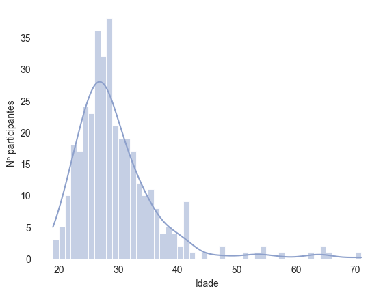

nome object
genero object
data_nascimento object
idade_participacao float64
ocupacao object
municipio object
pais object
classificacao int64
dtype: object
A nossa base é composta por 362 linhas e 8 colunas. As linhas representam todos os participantes das ediçoes de 1 a 22 e as colunas representam algumas informações referentes a esses participantes:
nome (str): nome completo do participante
genero (str): genero do participante (para facilitar a analise, assumiu-se o gênero de acordo com o primeiro nome do participante)
data_nasciment (date): data de nascimento
idade_participacao (date): idade do participante no inicio do reality show
ocupacao (str): profissões (em alguns casos, existe mais de uma profissão)
municipio (str): municipio de nascimento
pais (str): pais de nascimento
classificacao (int): colocação final no programa (1 = 1º lugar, 2 = 2º lugar, etc)
Exploração
Idade
sns.set_style("white")p = sns.histplot(data_raw, x ="idade_participacao", binwidth=1, kde =True, color = sns.color_palette("Set2")[2])p.set(xlabel ="Idade", ylabel ="Nº participantes")sns.despine(left =True, bottom =True)

sns.histplot(data_raw, x ="idade_participacao", hue ='genero', kde =True, palette= sns.color_palette("Set2"))
C:\Users\Carlos\AppData\Local\Temp\ipykernel_6268\1156136826.py:1: UserWarning: The palette list has more values (8) than needed (2), which may not be intended.
sns.histplot(data_raw, x = "idade_participacao", hue = 'genero', kde = True, palette= sns.color_palette("Set2"))
Apesar da média de idade ser bastante próxima, nota-se que pessoas do gênero feminino tendem a entrar na casa com idades mais baixas que do gênero masculino
Como curiosidade, podemos verificar também se determinado signo tem mais chances de entrar no programa do que outros
Quando comparamos também o gênero, nota-se que há uma tendência de mulheres mais novas serem chamadas mais do que homens. E em relação e vitórias, será que existe alguma idade que possui mais chance de vencer?
Considerando as idades com pelo menos duas partipações, 21 anos parece ser a idade em que a média de classificação final é mais alta, seguido por 40 anos e 36 anos. Portanto, se você esta em uma dessas idades, pense em se inscrever.
Origem
Regiões
Ocupação
Após o fim do programa, é normal os participantes adquirirem uma nova profissão: “Ex-BBB”, mas antes disso é necessário que eles sejam escolhidos com base nas suas profissões atuais. Além de “modelo”, quais outras profissões são importantes para ser escolhido para a casa mais vigiada do Brasil?
data_raw['ocupacao'].str.lower().str.replace(" e ", ",").str.split(",").explode().value_counts()
Pode-se remover gênero, acentuação e simplificar as profissões para termos uma ideia melhor de como as profissões são distribuidas
profissoes = data_raw['ocupacao'].str.lower().str.replace(" e ", ",").str.replace(",", "/").str.split("/")profissoes = [j for i in profissoes for j in i]for i, profissao inenumerate(profissoes): palavra = profissao.split()[0]if palavra =="atriz": palavra ="ator"if palavra[-1] in ['a', 'o']: palavra = palavra[0:-1] profissoes[i] = palavrapd.Series(profissoes).value_counts().head(10)
estudante 45
model 41
ator 18
empresári 17
cantor 16
professor 15
advogad 11
jornalist 10
promotor 9
influenciador 8
dtype: int64
p = sns.barplot(y = data_raw['ocupacao_resumida'].explode().value_counts().index, x = data_raw['ocupacao_resumida'].explode().value_counts(), order = data_raw['ocupacao_resumida'].explode().value_counts().iloc[:10].index, palette ="Purples_r")p.bar_label(p.containers[0])